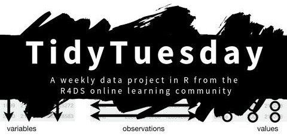

Chapter 8 Project
Either
have some idea about new functions you want to create and share, and make it as a new R package,
explore, visualize, and analyze some data (cf. hereinafter).
8.1 What is Tidy Tuesday?

A weekly data project from the R4DS community.
The aim is to understand how to summarize and arrange data to make meaningful charts with
ggplot2,tidyr,dplyr, and other tools in thetidyverseecosystem.Safe and supportive space for individuals to practice their wrangling and data visualization skills independent of drawing conclusions.
How it works:
The dataset comes from a source article and it is made available on Mondays.
People then play with the data set using the tidyverse, explore things that they think are interesting, and/or try to recreate the source article plots/results.
And share their own version on Twitter (with the hashtag #TidyTuesday).
8.2 Tidy Thursday
Our own mini-version of Tidy Tuesday!
Join in teams of 2 (or 3).
Choose a dataset from the ones provided.
Come up with an interesting topic to visualize (or recreate an existing one).
Apply things you have learned in this course, and try to learn new things with our help and Google’s help.
Share the resulting plot(s) and the code with the rest on Friday with a short presentation talking about challenges and conclusions from the plot.
8.2.1 Choose a dataset
Install the {tidytuesdayR} package:
Some interesting datasets:
If you do not like any of these, you can also choose from all the previous tidy Tuesday datasets here.
8.2.2 Visualize the data
Come up with a question, or an interesting thing to learn from the data.
You can get inspired by looking at other participants on Twitter:
Shiny app with a compilation of tweets ordered by likes TidyTuesdayRocks
Search for #TidyTuesday + dataset_name on Twitter.
Remember that the code is always available at the author’s github page.
8.2.4 Example
Someone tried the recreate a plot using the Netflix dataset:
In today's #TidyTuesday I looked at Netflix movies, specifically checking out movie duration over time. #Rstats https://t.co/PeVIhpAsSy pic.twitter.com/2TOZ9nFKQP
— Marieke (@marieke_k_jones) April 20, 2021
Clara’s (quick) version:
##
## Downloading file 1 of 1: `netflix_titles.csv`netflix_titles %>%
filter(type == "Movie") %>%
mutate(duration = as.numeric(str_extract(duration, "(\\d)+")),
cat = map_chr(listed_in, ~str_split(.x, ", ")[[1]][1]),
cat = case_when(
cat %in% c("Horror Movies", "Thrillers") ~ "Horror Movies & Thrillers",
TRUE ~ cat)) %>%
group_by(release_year, cat) %>%
summarise(mean_duration = mean(duration)) %>%
filter(cat %in% c("Action & Adventure", "Children & Family Movies",
"Comedies", "Documentaries", "Dramas",
"Horror Movies & Thrillers")) %>%
ggplot(aes(x = release_year, y = mean_duration, color = cat)) +
geom_line() +
scale_x_continuous(limits = c(1980, 2020)) +
scale_y_continuous(limits = c(50, 160), breaks = seq(50,150, 25)) +
facet_wrap(~cat) +
theme_minimal() +
theme(text = element_text(size = 14),
legend.position = "none",
axis.title.x = element_blank()) +
labs(title = "Children's movies and Dramas decrease in duration over time",
y = "Average movie duration (min)")
8.2.5 Presentation
Make a short (5-10 min) presentation; you can simply make an HTML from RMarkdown, push to GitHub and we can preview it on http://htmlpreview.github.io/.
What you can present:
Introduce the data set and the variables you have chosen to visualize.
Show the resulting plot and discuss the trends/patterns in the data.
If you chose to recreate a visualization from Twitter, comment on the quality of the plot or potential problems.
Show the generative code and comment on the steps and transformations you have applied to the data.
Did you find a set of
tidyversefunctions particularly useful? Did you discover another useful package?
Some examples from students in 2022-2023: